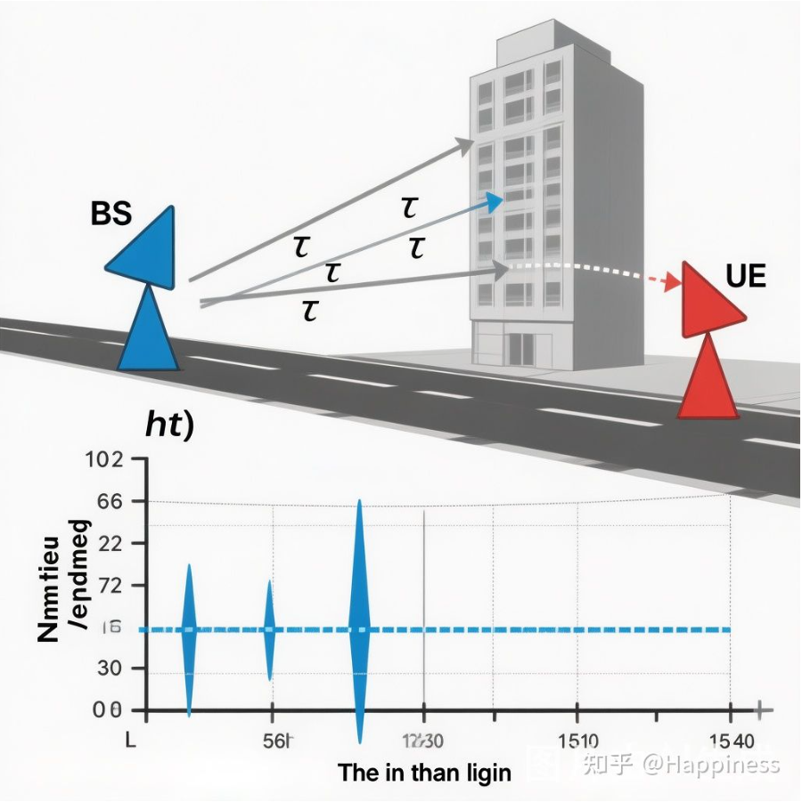
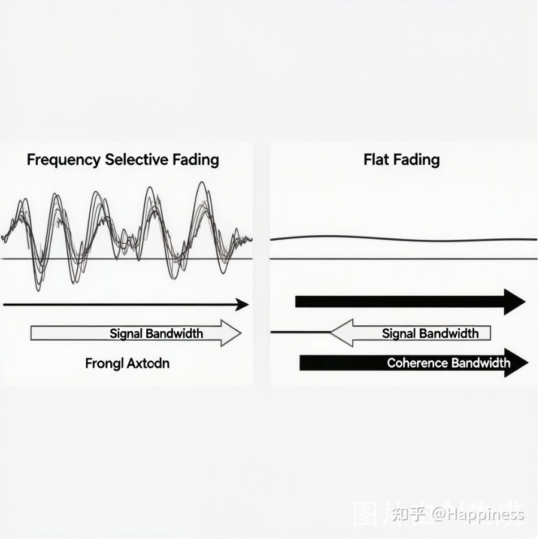

第 1 讲：为什么需要 OFDM？——从单载波的困境说起
在开始正式学习 OFDM 之前，我想先带大家回到一个根本问题：为什么我们需要 OFDM？它到底解决了什么问题？
这个问题看似简单，但它实际上触及了 OFDM 存在的全部理由。只有理解了单载波的困境，你才能真正理解 OFDM 的设计动机。
一、无线信道的“多径效应✦”：信号的好帮手，也是大麻烦
在理想情况下，电磁波✦从发射天线到接收天线，走的是一条直线路径。但现实世界没那么简单——高楼、山体、地面、车辆……到处都是反射体✦。发射出去的信号，会通过多条不同的路径到达接收端，这就是多径效应（Multipath Effect）。
你站在城市街道✦上用手机上网，信号可能通过以下三条路径到达你：
- 直射路径✦：从基站直接到达你
- 地面反射：从地面反射后到达你
- 建筑反射：从旁边的建筑反射后到达你
每条路径的长度不同，到达时间自然也不同。最先到达的可能是反射信号，最后到达的可能是直射信号——这完全取决于实际环境。
从频域的角度看，多径效应会导致频率选择性衰落✦（Frequency Selective Fading）。什么意思呢？由于不同频率的信号经过多径叠加后相位不同，某些频率点✦上的信号会相互增强，而另一些频率点上的信号会相互抵消。结果就是，信道的频率响应✦变得“坑坑洼洼”——某些频段信号质量很好，某些频段信号几乎完全消失。

我们可以用一个简单的数学模型✦来描述多径信道✦。信道的冲激响应✦可以表示为：
\[ h(t)=\sum_{l=0}^{L-1}\alpha_l\cdot\delta(t-\tau_l) \]
其中 $\alpha_l$ 是第 $l$ 条路径的衰减系数✦，$\tau_l$ 是第 $l$ 条路径的时延。所有路径中最大时延与最小时延之差，叫做时延扩展✦（Delay Spread），通常记为 $\tau_{max}$。
时延扩展直接决定了信道的相干带宽✦（Coherence Bandwidth）：
\[ B_c\approx\frac{1}{5\tau_{max}} \]
这是一个非常重要的概念。如果信号带宽 $B$ 远大于 $B_c$（即 $B\gg B_c$），信号的不同频率分量会经历不同的衰落——这就是频率选择性衰落。反之，如果 $B\ll B_c$，整个信号带宽内的衰落近似一致，叫做平坦衰落（Flat Fading）。

二、单载波的困境：均衡器扛不住了
既然信道是频率选择性的，那最直接的想法就是：用均衡器把信道的畸变补偿回来。
单载波系统✦中，接收端使用时域均衡器✦（通常是线性横向均衡器 FIR 或判决反馈均衡器 DFE）来消除多径造成的码间干扰✦（ISI）。
均衡器的原理听起来简单：设计一个滤波器✦，使其频率响应恰好是信道频率响应的倒数，两者串联后总响应就恢复平坦了。
\[ H_{EQ}(f)=\frac{1}{H(f)} \]
但问题是——这个均衡器✦有多复杂？
在实际系统中，均衡器的抽头数✦大约与时延扩展（以符号周期为单位）成正比。一个经验公式✦是：需要大约 2 ～ 3 倍时延扩展（归一化到符号周期✦）的抽头数。
我们来算一笔账。假设一个城市环境，最大时延扩展 $\tau_{max}=5\mu s$：
| 带宽 | 符号周期 | 归一化时延扩展 | 均衡器抽头数 |
|---|---|---|---|
| 5 MHz | 0.2 μs | 25 | ~75 |
| 10 MHz | 0.1 μs | 50 | ~150 |
| 20 MHz | 0.05 μs | 100 | ~300 |
| 100 MHz (5G) | 0.01 μs | 500 | ~1500 |
看出来了吗？随着带宽增长，均衡器的复杂度急剧上升。
5MHz 带宽时 75 个抽头的均衡器，到了 100MHz 就需要 1500 个抽头。每个抽头都需要做复数乘法运算✦，这对硬件来说简直是灾难。而且在 DFE 结构中，误差会在反馈环路中传播，收敛也是个问题。
这就是单载波的核心困境：带宽越宽，多径越严重，均衡器越复杂，系统越难实现。

三、OFDM 的破局思路：分而治之✦
OFDM 的核心思想，用一句话概括就是：
把一个宽带信道，切分成多个窄带子载波，让每个子载波✦上的衰落都变成平坦衰落。
这样的话，每个子载波上只需要做一个单抽头均衡器（也就是复数除法✦），复杂度从 $O(N_{taps})$ 直接降到了 $O(1)$ per subcarrier。
这个思路的精妙之处在于，它利用了 DFT（离散傅里叶变换✦）的数学性质来实现“分而治之”：
\[ X[k]=\mathrm{DFT}\{x[n]\}=\sum_{n=0}^{N-1}x[n]\cdot e^{-j\frac{2\pi}{N}kn} \]
在接收端做 DFT（即 FFT）之后，频域信号✦天然就是各子载波上的独立数据，可以直接逐子载波做均衡。整个过程不需要复杂的时域滤波✦。
用一个更直观的类比来理解：

四、OFDM 的关键参数：一窥究竟
为了让这个“分而治之”的方案切实可行，OFDM 在设计上做了几个关键选择：
1. 子载波间隔✦ = 1/T（T 是 OFDM 符号周期）
这个选择保证了子载波之间的正交性✦（Orthogonality），即使它们的频谱✦在频域上是重叠的，也不会互相干扰。这是 OFDM 中最精妙的设计，我们将在第 2 讲详细展开。
2. 循环前缀（Cyclic Prefix, CP）
在每个OFDM 符号✦前面，复制符号尾部的一段作为前缀。这个看似多余的操作，巧妙地消除了多径带来的符号间干扰✦（ISI）和子载波间干扰✦（ICI）。我们将在第 5 讲深入讨论。
3. 子载波数量 N 的选择
子载波数量越多，每个子载波越窄，频谱效率✦越高，但 FFT 的计算量也越大，对相位噪声✦也越敏感。典型的选择范围是 64 到 4096，具体取决于带宽和子载波间隔。
以 LTE 系统为例，20MHz 带宽配置：
- 子载波间隔：$\Delta f = 15\mathrm{kHz}$
- 子载波数量：$N = 2048$（实际使用 1200 个）
- OFDM 符号周期：$T=1/\Delta f = 66.7\mu s$
- 循环前缀长度：$4.7\mu s$（常规 CP）
这些参数不是随意选的，背后都有严格的工程考量。
五、本讲小结
让我们用一张表来总结单载波和 OFDM 的核心区别：
| 维度 | 单载波 | OFDM |
|---|---|---|
| 均衡复杂度 | O(N_taps)，随带宽增长 | O(1)/子载波，与带宽无关 |
| 带宽扩展性 | 差 | 好 |
| 对频率选择性信道 | 敏感，需复杂均衡 | 天然适应 |
| 峰均比（PAPR） | 低 | 高（这是OFDM的代价） |
| 对同步误差✦ | 较宽容 | 敏感（需要精确同步） |
可以看到，OFDM 并非完美无缺——它在降低均衡复杂度的同时，引入了高峰均比和对同步精度✦的严格要求。这些代价是真实存在的，也是我们后续课程中要重点讨论的问题。
但总体来说，对于宽带无线通信✦（带宽 > 5MHz），OFDM 的收益远远大于代价。这就是为什么 4G LTE、5G NR、Wi-Fi 4/5/6/7，几乎所有主流宽带无线标准，都不约而同地选择了 OFDM 作为物理层波形✦。